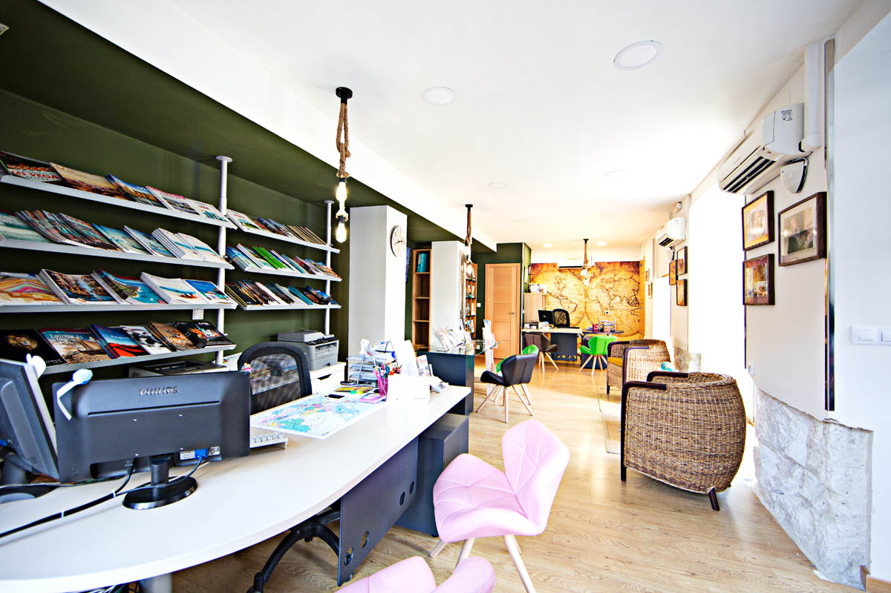

¿QUIENES SOMOS?
Aixa Viajes es una empresa dedicada al sector del turismo con mas de 20 años de trayectoria en el mercado. Nos caracterizamos por el buen servicio y oferta de productos turísticos de
calidad en destinos nacionales e internacionales. Somos un equipo de trabajo de más de 30 personas comprometido con cumplir los sueños de viaje de nuestros clientes.
Coordinamos todos los servicios de un paquete turístico, como billetes de vuelo/barco, alojamiento, alimentación, traslados, tours, asistencias médicas, alquiler de coches, cruceros...
De igual forma gestionamos todos los servicios de viajes en grupo y eventos.
Misión
Inspirar y hacer vivir experiencias de viaje memorables.
Visión
Ser una empresa sólida, confiable y socialmente responsable, reconocida por sus clientes por la calidad y el servicio. Con un equipo humano profesional, amable y feliz.
Política de calidad
Aixa viajes se compromete a mantener la confiabilidad, accesibilidad en el servicio, la calidad de sus productos, la investigación en nuevas tecnologías y el crecimiento. Igualmente a desarrollar la capacidad de satisfacer al cliente, procesos eficaces, la gestión de sistemas y financiera, las alianzas con proveedores, a promover la realización personal y profesional del recurso humano, los valores organizacionales y programas sociales. Así como a mejorar el posicionamiento de marca. Además es una empresa comprometida con la implementación y mantenimiento del sistema de seguridad y salud en el trabajo.
Política de sostenibilidad
Aixa Viajes es una empresa comprometida con el desarrollo sostenible, que respeta el patrimonio natural y cultural de cada país, promoviendo con clientes, proveedores y empleados prácticas responsables con el medio ambiente, comunidades locales y patrimonio cultural. Así mismo apoya el desarrollo económico de la región donde opera y de los destinos que comercializa.
Política de seguridad y salud en el trabajo
Es política de Aixa Viajes, en sus operaciones de diseño, asesoría y venta de paquetes turísticos, así como funciones administrativas en todas las sedes, reconocer la importancia del capital humano y comprometerse al más alto nivel de la organización con la implementación y mejoramiento continuo a través del Sistema de Gestión de Seguridad y Salud en el Trabajo, el cual va encaminado a promover y mantener el bienestar físico, mental y social de los trabajadores y demás partes interesadas, ofreciendo lugares de trabajo seguros y adecuados.
Contacta con nosotros -->Click aquí
